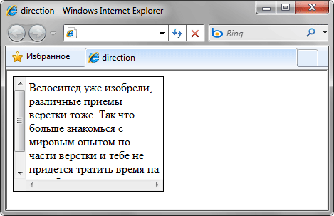
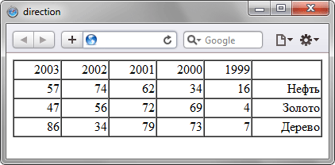

direction
direction предназначен для сайтов, в которых имеет значение направление текста. Например, при использовании арабского алфавита чтение происходит справа налево.
Свойство direction достаточно универсально и управляет следующими возможностями:
- способ отображения текста в блоке;
- порядок колонок в таблице;
- позиция полосы прокрутки в блоке;
- положение последней висячей строки текстового блока при text-align: justify.
Для использования со встроенными элементами, значение свойства unicode-bidi должно быть задано как embed или override.
Краткая информация
| Значение по умолчанию | ltr |
|---|---|
| Наследуется | Да |
| Применяется | Ко всем элементам |
Синтаксис
direction: ltr | rtlЗначения
- ltr
- Устанавливает направление слева направо.
- rtl
- Задаёт направление справа налево.
Пример
<!DOCTYPE html>
<html>
<head>
<meta charset="utf-8">
<title>direction</title>
<style>
div.rtl {
direction: rtl; /* Направление */
width: 200px; /* Ширина блока */
height: 150px; /* Высота блока */
overflow: scroll; /* Полоса прокрутки */
text-align: left; /* Выравнивание по левому краю */
padding: 5px; /* Поля вокруг текста */
border: 1px solid #000; /* Параметры рамки */
}
</style>
</head>
<body>
<div class="rtl">Велосипед уже изобрели, различные приемы верстки тоже.
Так что больше знакомься с мировым опытом по части верстки и тебе не придется
тратить время на разработку того, что всем давно известно.</div>
</body>
</html>Результат данного примера показан на рис. 1. Обратите внимание на положение точки в предложении, а также на то, что полоса прокрутки в браузере Internet Explorer отображается слева.

Рис. 1. Результат использования direction в браузере Internet Explorer
<!DOCTYPE html>
<html>
<head>
<meta charset="utf-8">
<title>direction</title>
<style>
table {
direction: rtl; /* Колонки идут справа налево */
width: 100%; /* Ширина таблицы */
border-spacing: 0; /* Убираем пространство между ячейками */
}
</style>
</head>
<body>
<table border="1">
<tr>
<td> </td><td>1999</td><td>2000</td>
<td>2001</td><td>2002</td><td>2003</td>
</tr>
<tr>
<td>Нефть</td><td>16</td><td>34</td>
<td>62</td><td>74</td><td>57</td>
</tr>
<tr>
<td>Золото</td><td>4</td><td>69</td>
<td>72</td><td>56</td><td>47</td>
</tr>
<tr>
<td>Дерево</td><td>7</td><td>73</td>
<td>79</td><td>34</td><td>86</td>
</tr>
</table>
</body>
</html>Результат данного примера показан на рис. 2. Колонки таблицы отображается справа налево.

Рис. 2. Применение direction к таблице
Объектная модель
Объект.style.direction
Примечание
При добавлении свойства direction со значением rtl к блоку с полосой прокрутки (например, <textarea>), браузер Internet Explorer и Firefox отображают скроллинг слева, а Opera и Safari — справа.
Спецификация
| Спецификация | Статус |
|---|---|
| CSS Writing Modes Module Level 3 | Рабочий проект |
| CSS Level 2 (Revision 1) | Рекомендация |
Браузеры
| Internet Explorer | Chrome | Opera | Safari | Firefox |
| 5.5 | 2 | 9.2 | 1.3 | 1 |
| Android | Firefox Mobile | Opera Mobile | Safari Mobile |
| 1 | 1 | 8 | 3.1 |